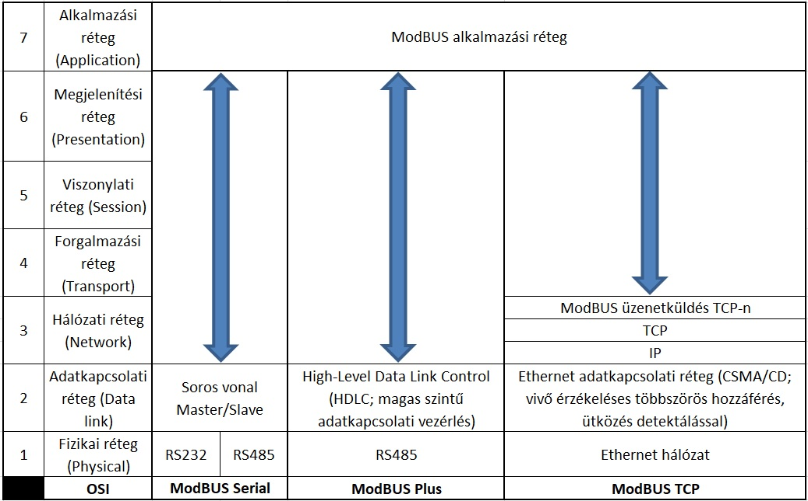
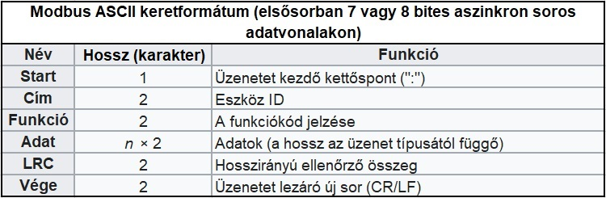
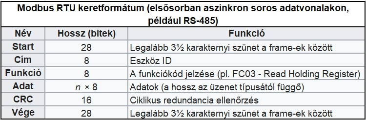
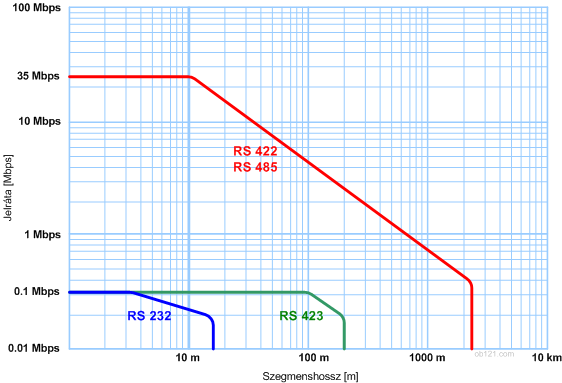
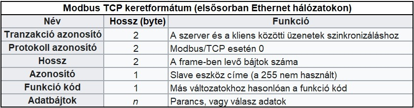
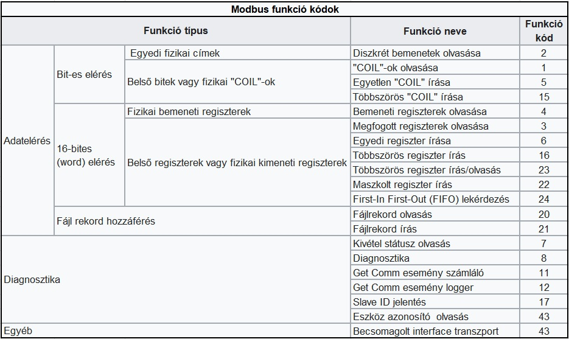
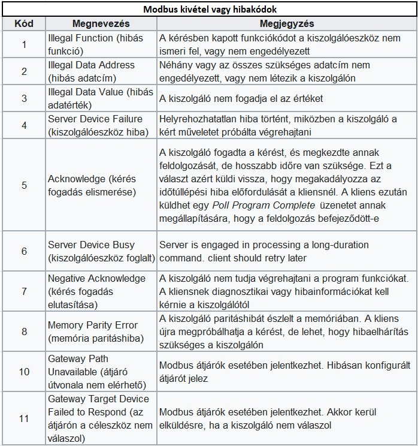

A ModBUS az alkalmazási réteg szintjén található üzenetküldési protokoll (OSI referenciamodell 7. szint).
Master/Slave (kliens/szerver) kommunikációt biztosít buszvonalon vagy hálózaton csatlakoztatott eszközök között.
Jellemző kialakításban egyetlen Master kéréseket (Request) intéz a Slave eszközök irányába, majd fogadja az onnan érkező válaszokat (Response). Egy-egy kérés az adott eszköz címe (Slave ID) alapján jut célba.
A ModBUS egy rendkívül népszerű protokoll, mivel
- fejlesztésének elsődleges célja az ipari alkalmazhatóság,
- szabadon használható (jogdíj mentes),
- beüzemelése és karbantartása viszonylagosan egyszerű,
- az eszközgyártók felé nincsenek jelentős megkötések.
(Bővebben lásd: angolul itt, illetve magyarul itt)
ModBUS - OSI
Open Systems Interconnection Reference Model
(nyílt rendszerek összekapcsolási referenciamodellje)

MBAP - Modbus Application Protokoll
(ModBUS applikáció Protokoll; teljes leírás: modbus.org)
ModBUS ASCII
Soros kommunikációban használt protokoll. Az üzenet továbbítás ASCII karakterekkel történik, hosszirányú ellenőrző összeget (LRC - Longitudinal Redundancy Check) használva a hiba detektálásához.
A Modbus ASCII üzeneteket a kezdő kettőspont (":"), illetve a lezáró új sor (CR/LF) keretezi.

ModBUS RTU
Soros kommunikációban használt protokoll. A Modbus RTU esetébenn az adatok kompakt, bináris formában kerülnek továbbításra, a hiba detektálása ciklikus redundancia ellenőrzéssel (CRC - Cyclic Redundancy Check) valósul meg.
A Modbus RTU üzeneteket folyamatos karakterlánc formájában kell továbbítani. Az egyes üzeneteket nyugalmi avagy tétlen (Idle) periódusok választják külön.

Alkalmazott átviteli szabványok
RS-232
Két eszköz közötti pont-pont (p2p) kapcsolat megvalósítására alkalmas. Ezzel a szabvánnyal csak nagyon rövid távolságok (max. 15 m) áthidalása oldható meg, és legfeljebb ~20 kbps adatátviteli sebességen.
A számos hátránya miatt a ModBUS adatátvitel gyakorlatában csak nagyon ritkán alkalmazzák.
RS-422
Az RS-232 szabványhoz hasonlóan két eszköz közötti pont-pont (p2p) kapcsolat megvalósítására alkalmas. Ezzel a szabvánnyal már nagyobb távolságok áthidalhatók (max. 1200 m), és legfeljebb ~10 Mbps adatátviteli sebességen.
Hálózatban is alkalmazható, amennyiben az 1 adóból és legfeljebb 10 vevőegységből áll.
RS-485
A leggyakrabban használt soros átviteli szabvány. Multipont kapcsolat megvalósítására alkalmas, vagyis multi-drop beállítások mellett több vevőegység is csatlakozhat egy ilyen hálózatra.
Széles körben elterjedt az ipari felhasználása, így a ModBUS soros adatátvitel esetében is. Az alkalmazható maximális távolság 1200 m, az elérhető legnagyobb adatátviteli sebesség pedig 50 Mbit/s - ideális körülmények között (a távolság és a sebesség fordítottan arányos egymással).
A busz-topológia használata erősen ajánlott, minden egyéb topológia a ModBUS esetében kerülendő.

(Forrás: Wikipedia)
ModBUS TCP
A Modbus TCP/IP hálózatokon keresztüli kommunikációhoz használt protokollvariánsa. Az 502-es porton keresztül csatlakozik. Nem igényel külön hibaellenőrzést, mivel az a lejjebb található rétegekben már megvalósul.

ModBUS UDP
IP hálózatokon a Modbus UDP (User Datagram Protocol) által történő használata. Mivel az UDP nem tartalmaz hibaellenőrzést, így a biztonság rovására gyorsabb átvitelt lehet elérni.
ModBUS FC

ModBUS Exception

Kérdések esetén…
Egy-egy ModBUS kommunikációs feladat kivitelezése, illetve probléma elhárítása sok esetben csak gyakorlati tapasztalattal lehetséges. A még megoldatlan kérdéseket az support@modbus.hu email címen, vagy alább a Kapcsolatfelvétel űrlapon lehet feltenni.
|